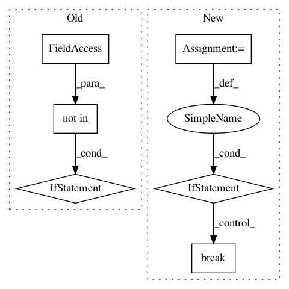

2cb9cfb2b6b1d2b5a14b543310761d64b76b8508,python/ray/serve/http_proxy.py,HTTPProxy,__call__,#HTTPProxy#Any#Any#Any#,87
Before Change
return
// TODO(simon): Use werkzeug route mapper to support variable path
if current_path not in self.route_table:
error_message = (
"Path {} not found. "
"Please ping http://.../-/routes for routing table"
).format(current_path)
await error_sender(error_message, 404)
return
endpoint_name, methods_allowed = self.route_table[current_path]
if scope["method"] not in methods_allowed:
error_message = ("Methods {} not allowed. "
After Change
try:
result = await self.router_handle.enqueue_request.remote(
request_metadata, scope, http_body_bytes)
if not isinstance(result, ray.exceptions.RayActorError):
await Response(result).send(scope, receive, send)
break
logger.warning("Got RayActorError:", str(result))
await asyncio.sleep(0.1)
except Exception as e:
error_message = "Internal Error. Traceback: {}.".format(e)
In pattern: SUPERPATTERN
Frequency: 3
Non-data size: 6
Instances
Project Name: ray-project/ray
Commit Name: 2cb9cfb2b6b1d2b5a14b543310761d64b76b8508
Time: 2020-04-12
Author: ed.nmi.oakes@gmail.com
File Name: python/ray/serve/http_proxy.py
Class Name: HTTPProxy
Method Name: __call__
Project Name: biocore/scikit-bio
Commit Name: daf661c3edd949f8ac2cd70e4a725d9a055cc0c3
Time: 2016-06-27
Author: mcdonadt@colorado.edu
File Name: skbio/tree/_tree.py
Class Name: TreeNode
Method Name: shear
Project Name: jazzband/django-debug-toolbar
Commit Name: 70d3aa1b8c12d614f2ca1b1b550bb605d8c8a506
Time: 2013-11-15
Author: aymeric.augustin@m4x.org
File Name: debug_toolbar/middleware.py
Class Name: DebugToolbarMiddleware
Method Name: process_request